UN PEQUEÑO DETALLE PARA TI 🌷
Lo especial de las personas
Hay personas que tienen una manera especial de transmitir alegría, tranquilidad y buenas energías.
Personas con las que una conversación puede convertirse en un momento bonito, incluso después de mucho tiempo sin hablar.
Y tú eres una de esas personas. Nunca dejes de ser esa persona tan especial.
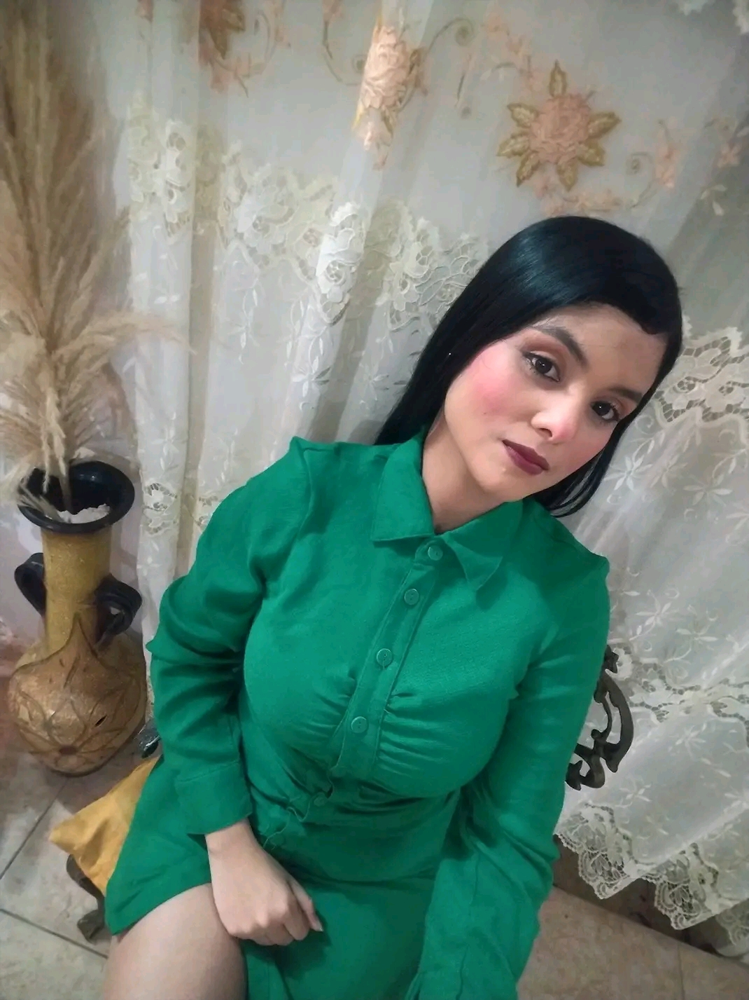
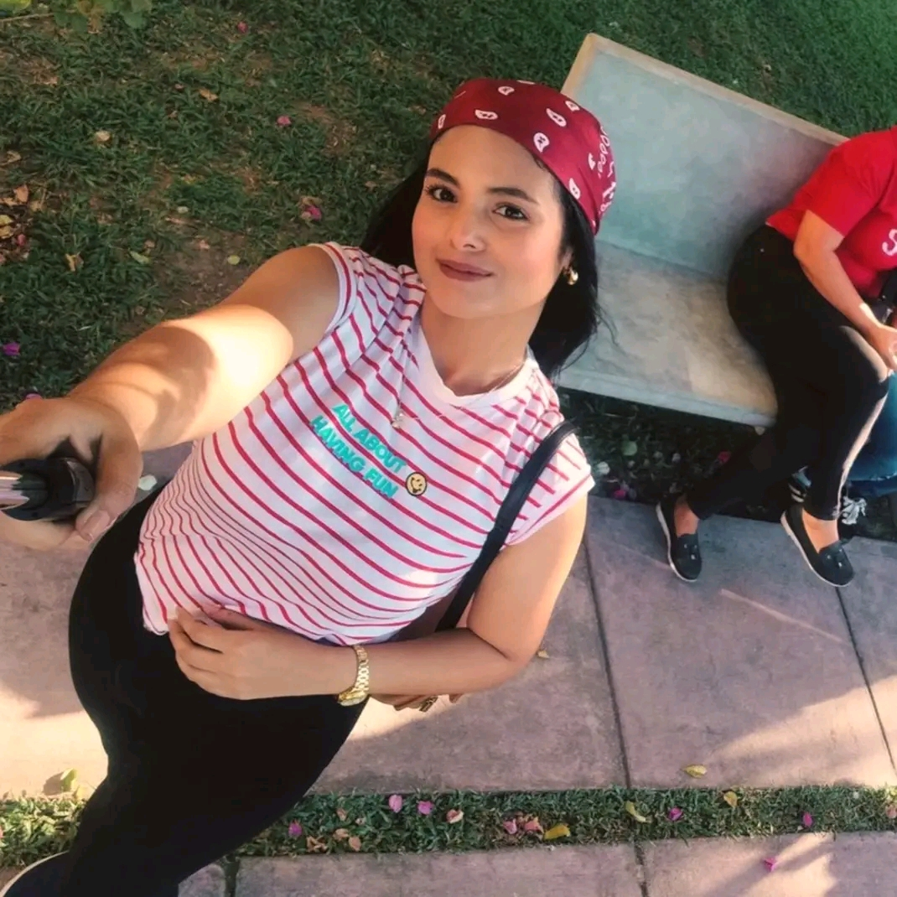
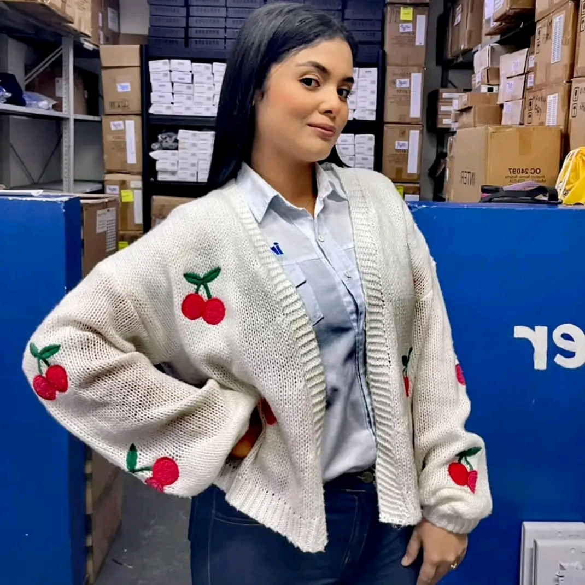
Paso 1 de 4
QUIERO RECORDARTE ALGO ✨
Nunca dejes de creer en ti
Nunca permitas que un día difícil te haga olvidar lo mucho que vales.
Tienes derecho a soñar en grande, a comenzar de nuevo, a equivocarte y a levantarte con más fuerza.
No te conformes con menos de lo que mereces. Sigue adelante, porque todavía tienes muchísimas cosas bonitas por vivir.
Confía en ti. Eres capaz de lograr cosas maravillosas.
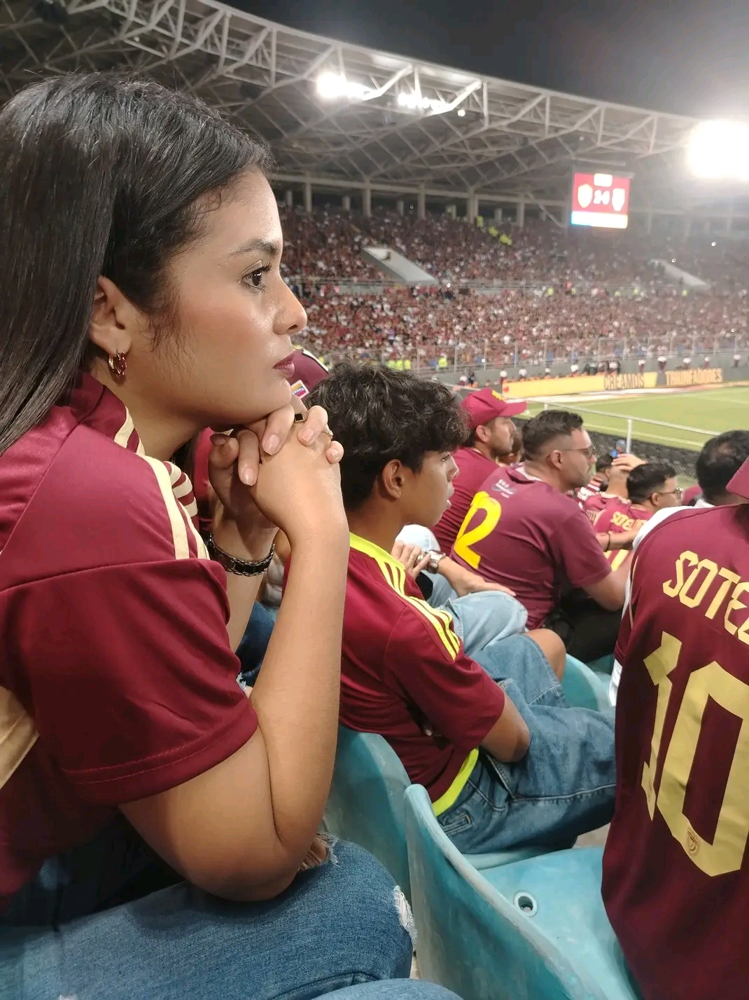
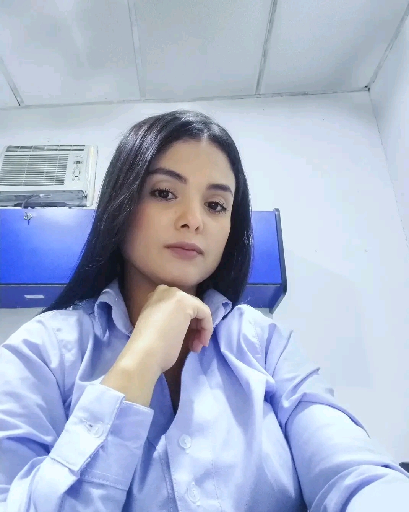
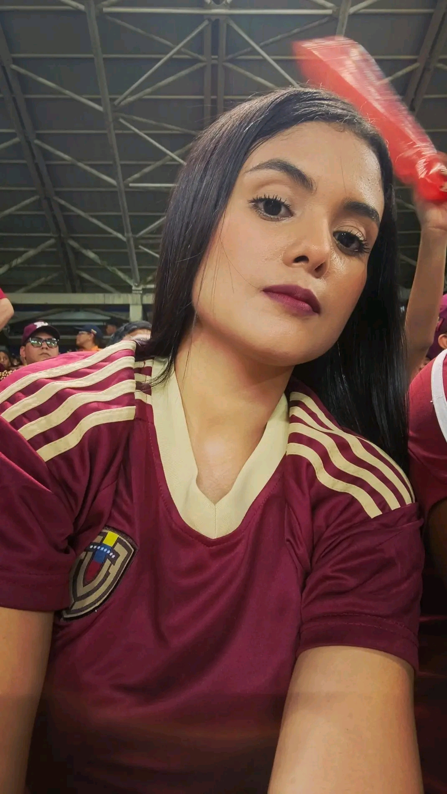
Paso 2 de 4
UN DESEO SINCERO PARA TI 🌸
Todo lo bonito que deseo para tu vida
Deseo que la vida te sorprenda con motivos para sonreír, con oportunidades que te hagan crecer y con personas que sepan valorar el corazón que tienes.
Que nunca te falte salud, tranquilidad, amor, motivos para levantarte cada mañana y fuerzas para perseguir tus sueños.
Que Dios ilumine tus pasos, cuide tu camino y te permita alcanzar todo aquello que tu corazón anhela.
Mereces ser feliz, Ana. Y ojalá la vida te regale muchísimas razones para serlo.
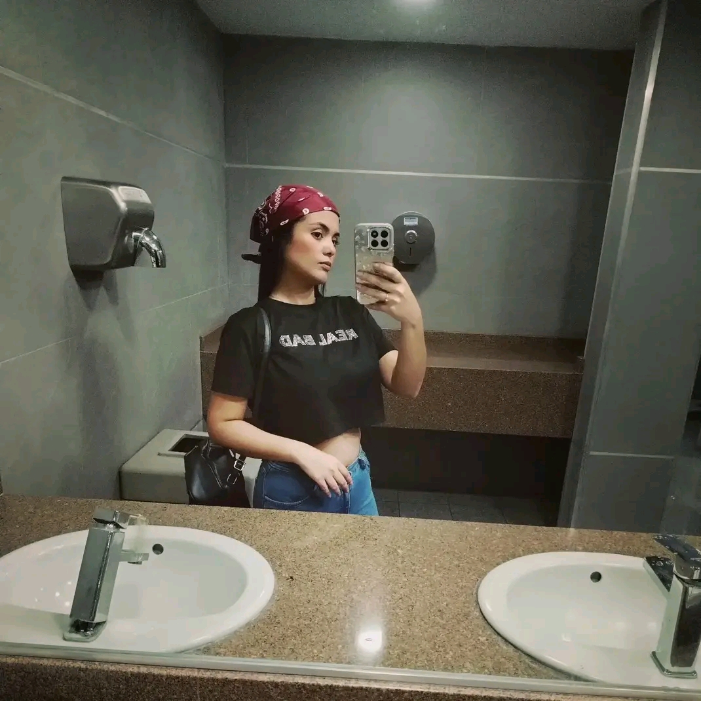
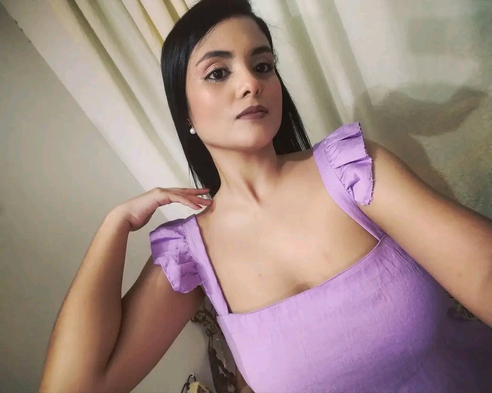
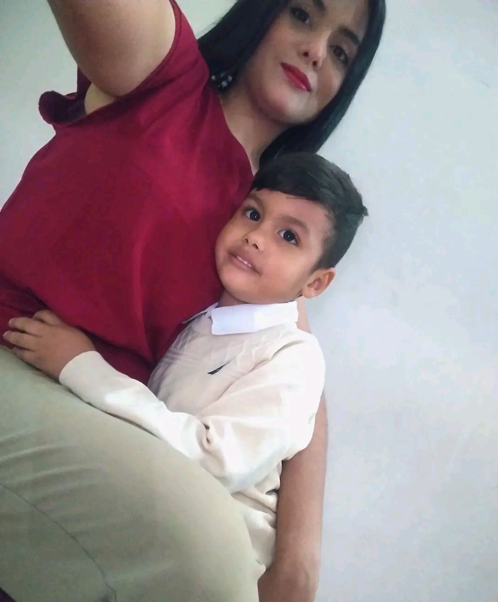
Paso 3 de 4
ANTES DE TERMINAR... 💜
Hay algo que quiero que sepas
Quiero que sepas que te tengo un cariño muy especial y que me alegra haberte encontrado en mi camino.
Y hay algo que a veces pienso: si nuestros caminos se hubieran cruzado en otra etapa de mi vida, cuando mi historia hubiera sido diferente y mi corazón estuviera libre, me habría encantado ser yo quien caminara a tu lado, te cuidara y buscara hacerte feliz.
Pero la vida tiene sus propios tiempos, y hoy mi deseo sincero es que seas feliz, que te quieran bonito y que nunca te falten razones para sonreír.
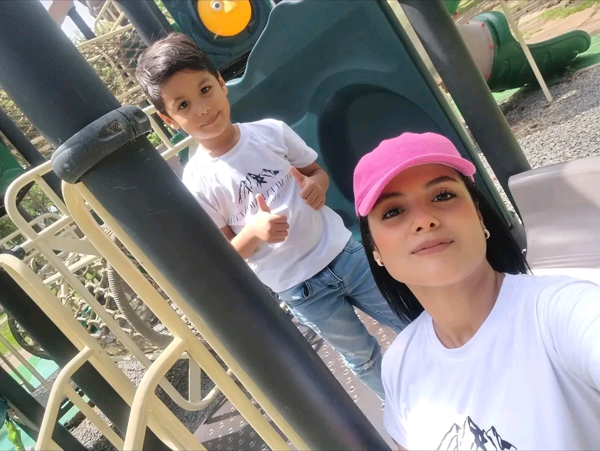
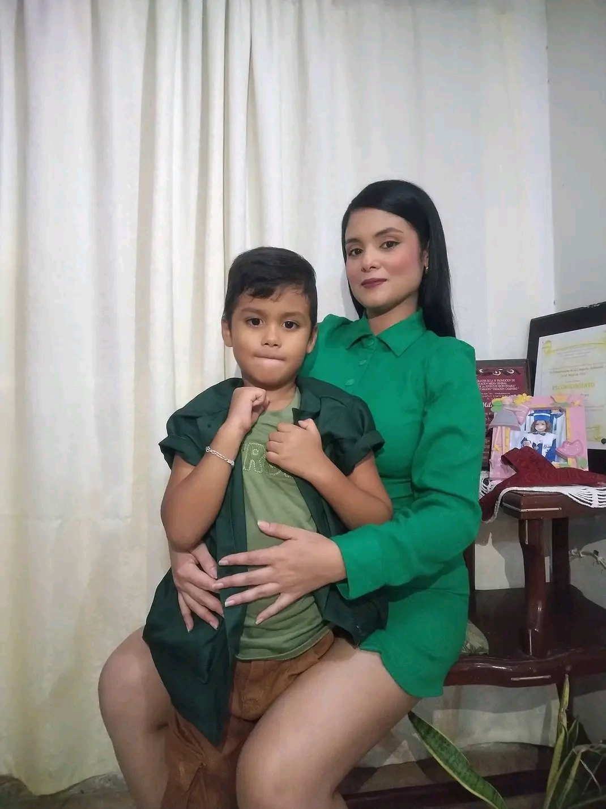
Con mucho cariño, Ana 💜
Nunca olvides lo valiosa que eres y todo lo bonito que mereces.
¡Que la vida te sonría siempre! 🌷
Paso 4 de 4 · Fin de la sorpresa